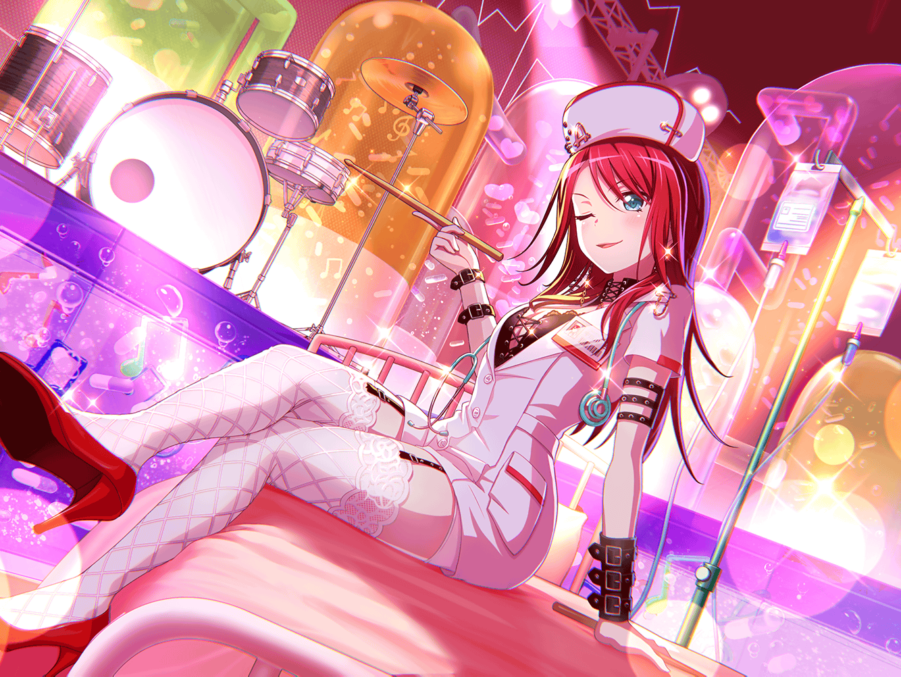

CiRCLE スタジオ受付
巴
お、{{userName}}サンじゃないか。
お疲れさま
巴
ああ、アタシ達は今練習が終わったところなんだ。
{{userName}}サンは今からスタジオの掃除か？
巴
はは、やっぱり。
いつもありがとう
巴
{{userName}}サンに
毎日掃除してもらってるおかげで、
アタシ達は気持ちよく使わせてもらってるよ
巴
そういえば、ちょっと話を聞いてもらってもいいか？
巴
実はこの間、アタシ風邪を引いちゃってさ、
学校を早退したんだ
巴
いや、もう今は大丈夫なんだけど、
ただ、あの時は本当にしんどかったよ
巴
学校を早退したのはいいけど
その日は家に親がいなくてさ
巴
帰宅してからそのことに気づいたもんだから、
家の薬が切れてることも知らなくて……
ホント、あの時はまいったよ
巴
ん？ ああ、薬は学校帰りのあこに、
買ってきてもらったよ
巴
あこが帰ってくるまでの間、
ひとりで部屋の天井を眺めながら寝てたんだけど……
巴
人って、病気とかで弱ってると心細くなるって本当なんだな。
柄にもなく『早くあこ帰ってこないかな』なんてことを
ずっと胸の中で思ってたよ
巴
それで、その後……たぶん１０分ちょっとぐらい後かな？
あこが息を切らせながら帰ってきた時は、
すごくホッとした
巴
心配かけて申し訳ないとか色々あったはずなのに
そういうの全部忘れて、
ただただホッとしたんだよ
巴
……うん、{{userName}}サンの言う通りだと思う。
近くに誰かいるってだけで、人って心強くなれるんだな
巴
そこらへんは、バンドも同じような気がするよ
巴
どんなに心が折れそうな時でも
仲間が隣にいるだけで、頑張れるからね
巴
まぁ、それで話を戻すと、
あこは帰宅した後、アタシのことを
ずっと甲斐甲斐しく看病してくれたんだ
巴
はは、{{userName}}サンも驚くよな。
そう、あのあこが看病してくれたんだ
巴
いつもアタシの後ろをついてきてた
あのあこが、いつの間にか
あんなに成長しているなんて……
巴
情けないけど、アタシが１番近くにいるのに
本当に気づかなかったよ
巴
もしかしたら身近だからこそ
成長に気づかなかったのかもしれない
巴
風邪で寝込んでるアタシの様子を
何度も見に来たり、
ご飯をつくってくれたり……
巴
あの日は、ずいぶんとあこの世話になったよ
巴
今までは、アタシがあこの世話役というか、
引っ張っていく役だったのに、風邪を引いただけで
立場が逆転しちゃうなんて思わなかったな～
巴
……ううん、別に寂しいとかそういうのじゃないよ。
ただ、本当に大きくなったんだな～って
感心しただけさ
巴
それにさっきも言ったけど、
前まではずっとアタシが
あこを引っ張っていく立場だったからね
巴
妹に甘えるのも
たまにはいいなと思ったんだよ
巴
でも、本当にたまにはだよ？
あこに甘えっぱなしになったら
姉の面目が立たなくなっちゃうし……
巴
やっぱりアタシは、
いつまでもあこの姉でありたいしさ
巴
とはいえ、あこも成長してるから、
ずっと引っ張っていく立場でいるのは
難しいと思う
巴
だから、これからはお互いがお互いを支え合えるような、
そんな関係になっていけたらいいなって思ってるんだ
巴
はは、そんなホメないでよ
巴
別にそういうつもりで言ったわけじゃないし、
アタシは立派でもなんでもないよ
巴
でも……{{userName}}サンに
そう言ってもらえるなら、
アタシの考えは間違えていないみたいだね
巴
うん……おかげで、なんか安心した
巴
不思議だね。
アンタの言葉は
まるで人を安心させることができる魔法みたいだ
巴
でも、なんだかんだ言ったけど、
アタシはこれからも
あこにとっていい姉でいたいっていう気持ちは変わらないよ？
巴
だって、あこが憧れてくれてるからね
巴
その期待は絶対に裏切れない。
だから、頑張って『カッコイイ姉』で居続けるよ
巴
応援してくれるの？
はは、ありがとう
巴
ホントに{{userName}}サンは優しいな～
巴
……っと、気づいたら、
結構な時間話し込んじゃったね
巴
仕事の途中だったのに悪いことしちゃったね
巴
それじゃあ、そろそろアタシは行くよ。
{{userName}}サン、またな！